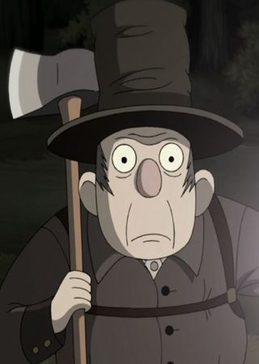
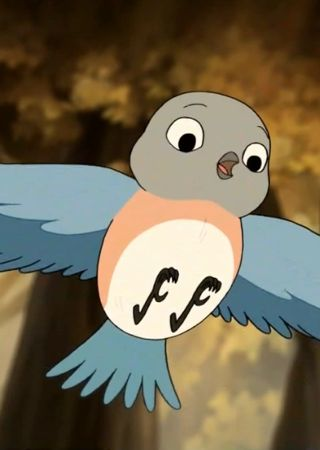
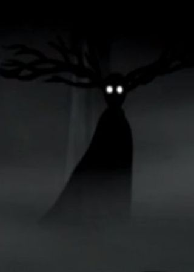

Gente del Bosque
En esta pagina se presentaran a personajes recurrentes que Wirt y Greg conocen durante su travesía por el bosque; si se desea
saber que ocurre a cada uno en el transcurso de la serie dirijase a la pagina "Episodios".
El Leñador

La primera persona con la que se encuentran los hermanos despues de despertar en el bosque.
Es un hombre brusco que se dedica a cortar los arboles del bosque para procesar su madera y hacer un aceite para mantener
prendido su farol.
Comienza la serie ayudando a los hermanos, pero, debido a su misteriosa relacion con La Bestia,
pierde su confianza y Wirt lo considera un enemigo por la mayor parte de la historia.
Su voz pertenece al actor de doblaje Rubén Trujillo en Hispanoamerica, y a Luis Mas en España.
Beatrice
Una Azuleja que los hermanos encuentran atrapada en un arbusto, al salvarla ella decide guiarlos a la casa de
Adelaide de la Pastura, la mujer buena del bosque, para ayudarlos a volver a casa.
Mas tarde, su amistad con los hermanos hace que les cuente su historia y que los salve de Adelaide. Incluso acompañando a Wirt
cuando decide enfrentar a La Bestia.
Su voz pertenece a la actriz de doblaje Gaby Cárdenas en Hispanoamerica, y a Michelle Jenner en España.

La Bestia

Una bestia que hacecha las partes mas oscuras del bosque, alimentandose de
las almas perdidas atrapadas en los arboles.
A pesar de que los hermanos no se la encuentran hasta el final de la serie, La bestia los sigue de cerca en todo momento; al punto
de que en cuanto Wirt comienza a perder esperanza, las ramas de los arboles del bosque comienzan a crecer sobre el, para facilitar
su consumo.
Tambien esta muy presente en la historia del Leñador, ya que La Bestia fue quien le dio su farol y responsabilidad.
Su voz pertenece al actor de doblaje Ulises Maynardo Zavala en Hispanoamerica, y a Pedro Tena en España.